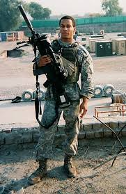

Combat Deployment

Nick Irving
Nick Irving was an Army Ranger with 33 confirmed kills in a matter of 4 months which was his only combat deployment to Iraq. His first and only combat deployment to Iraq lasted 4 months and he ended up getting 33 confirmed kills with his spotter Mike Pemberton. His personal rifle was and SR25 while Pemberton used to larger .300 Win Mag. Most of these kills came from fast Direct Action(DA) raids where the goal is to fast rope(where a helo drops a rope and you hold on to it and slide down) from helos about a mile or more from the target. Once the team was on the ground they would make their way to the mission area where Nick and Pemberton would set up on a roof and provide overwatch for the assault team. One of these missions they discovered a house filled with explosives. He was actually on the roof of this building before one of his squadmates told him about the large ammo dump underneath him. They got their man and then pulled extract and dropped a 500kg bomb on it which made a much bigger explosion than it should have. Another time Pemberton fell into a giant about 100 feet down but was luckily filled with water to save his life. He nearly got hypothermia from sitting in the water for nearly 30 min(i think) before they got a helo to come and pull him out. Pemberton was then shipped back stateside for nearly having frozen to death. He also was almost in a Mogadishu(Black Hawk Down) incident where him and most of his battalion was surrounded by a bunch of Muslim terrorists. Benjamin Kopp a machine gunner was shot in the artery in his thigh by a sniper known as the Chechen in the area and bled out. They got the Chechen though and eventually pulled extract but they lost several men and the platoon leader was shot in the chest by the sniper. He earned the nickname The Reaper from his quick way of getting kills.
Family
He was married to his wife Jessica in 2007. He was in combat during part of his marriage but it didn't weigh down on his wife as much as he didn't have any kids(like chris kyle). Nick Irving had one kid(as far as I know). I could only find this by listening to a Shawn Ryan Show which was as much I could really find about his family also he mentions some of his child life in "The Reaper".
Books
He wrote several books. The Reaper is a great book about his combat deployment in Iraq where he got 33 confirmed kills. In The Reaper he also talks about his life growing up and how he met his one and only wife. He also wrote a book called "The Way of the Reaper" where he talks more broadly about his life and applying the Ranger never quit mindset to life. He also wrote a fictional book series about an Iraq war soldier that is sort of based on his life.